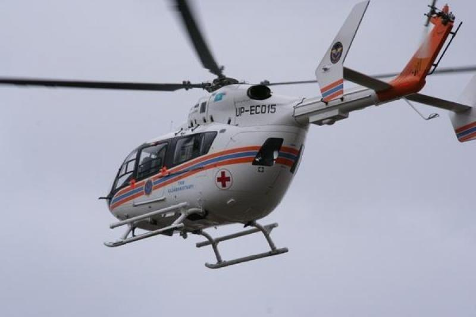

Зачем нужна воздушная транспортировка?
В целом можно сформулировать так - перевозят больных, требующих такого лечения, которое невозможно оказать на месте. Всегда надо взвешивать, что для больного лучше остаться на месте или быть перевезенным в лучшую больницу, подвергнувшись риску воздушной транспортировки (а он всегда есть!). Чаще всего решение «перевозить-не перевозить» принимать достаточно легко - например, бригаде МЧС или "03" на месте автоаварии - ясно, что на дороге тяжелого больного не вылечишь. Или, если больному требуется трепанация черепа, а в данной больнице нейрохирургии нет - надо перевозить. Бывает, наоборот, решение о перевозке принять трудно. Представим себе пациента в острой фазе инфаркта миокарда в неспециализированном стационаре, где нет современных препаратов и оборудования. Перевозить его надо, но во время транспортировки могут возникнуть грозные осложнения, с которыми в воздухе (даже в специализированном медицинском самолете!) бороться будет нелегко.
Преимущества Санитарной Авиации:
1.Быстрое реагирование
2.Спасение из труднодоступных мест
3.Транспортировка осуществляется в любую точку мира.
4.Индивидуальный подход к решению каждой задачи.
5.Возможность перевозки людей в крайне тяжелом состоянии.

Недостатки Санитарной Авиации:
1.Очень высокая стоимость летательных аппаратов, их эксплуатации и обслуживания.
2.Высокая стоимость авиационного топлива.
3.Необходимость высококвалифицированных сотрудников для работы и проведения для них специальной подготовки.
4.Необходимость строительства соответствующей инфраструктуры, организации диспетчерского сопровождения полетов, решения бюрократических и организационных проблем.